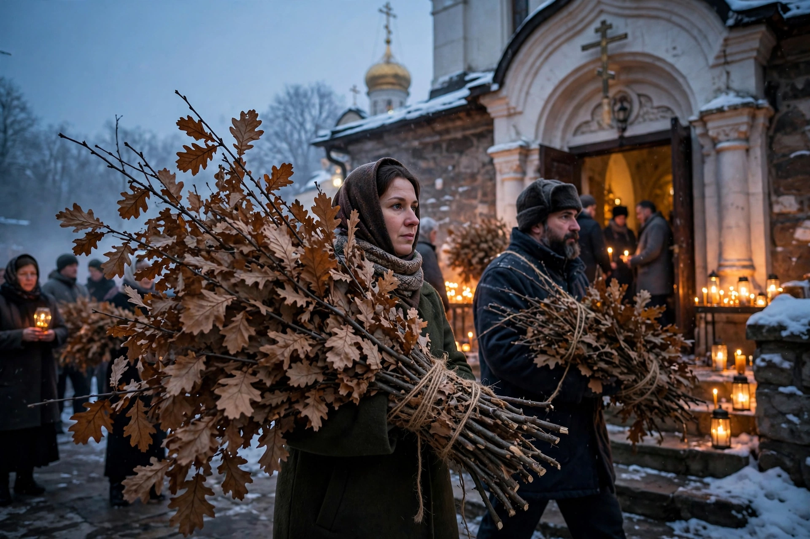

Badnjak

| Badnjak | |
|---|---|
| Serbian | бадњак (badnjak) |
| Observed by | Serbs, Croats, Bulgarians, Macedonians, Montenegrins |
| When | Christmas Eve (Badnje veče) — 24 December / 6 January (Julian) |
| Material | Young oak (often Turkey oak, Quercus cerris) |
| Type | Christmas tradition, log / branch ceremony |
The badnjak (Serbian Cyrillic: бадњак), also called veseljak in some regions, is a log or branch — traditionally from a young oak tree — central to Serbian and other South Slavic Christmas Eve celebrations. Christmas Eve itself is called Badnje veče or Badnjak after it. The custom is also preserved among Croats (especially in Dalmatia and Lika, where up to three logs may be used), Bulgarians (badnik), Macedonians (badnik) and Montenegrins.
The ceremony
Early on Christmas Eve morning, the head of the household (or nowadays a group of men from the village) goes to the woods to fell a young, straight oak. The tree is greeted, sometimes offered grain and wine, and cut so that it falls to the east; a glove or cloth is used to handle it to avoid touching it with bare hands. The log is carried home in the evening, greeted by the household, strewn with grain, and laid on the hearth fire. In modern practice, where open hearths are rare, families buy bundles of oak twigs with dried leaves at markets, burn them at home, or join in the communal burning of badnjaks in churchyards after the evening service, a custom that has become a major public gathering, especially in Serbia and Montenegro.
As the badnjak burns, family members stir the fire to make sparks fly, saying wishes for the coming year — "as many sparks, so many sheep, money, happiness" and the like. The log ideally burns through the night, and the ashes and charcoal are kept for protective and agricultural uses.
Symbolism and origins
The burning log represents the fire that warmed the newborn Christ, and the oak branches brought into the house are linked to the branch the shepherds brought to Bethlehem. Ethnologists have long noted older, pre-Christian layers in the rite: the ceremonial felling, feeding of the tree, and spark-divination suggest roots in Slavic pagan veneration of the oak, the tree of the thunder god Perun, and of hearth-fire cults. The Serbian ethnographer Veselin Čajkanović analysed such survivals extensively.
In some regions badnjak also names the Christmas Eve visitor (the first guest, položajnik) or, in Croatian usage, may refer to Christmas Eve itself.
Related customs
The badnjak belongs to a wider European family of Yule log customs, including the French bûche de Noël, the English Yule log, and the Croatian and Slovenian Christmas Eve log rites. The Serbian Christmas season also includes the scattering of straw on the floor of the home, the fasting Christmas Eve dinner, and the breaking of the round česnica bread with a coin on Christmas Day.